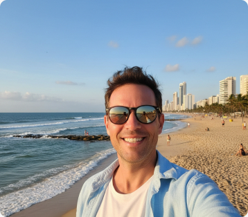

O centro histórico de Recife, conhecido como Recife Antigo, vale um dia inteirinho de visita. Não se limite a fazer aqueles city tours rapidões, que passam voando por lá e ainda incluem uma visita a Olinda e a shoppings. A região é cheia de atrações históricas e culturais, todas próximas umas das outras e tudo pode ser percorrido a pé.
Por isso, preparei uma listinha das atrações imperdíveis, com minhas impressões sobre os pontos turísticos do centro histórico de Recife e detalhes do meu roteiro a pé. Viajei sozinha e me senti segura.
Do museu em que você vai ficar sabendo mais sobre a vida de Luiz Gonzaga até uma oficina de frevo, passando pelo famoso Marco Zero, você vai se divertir muito no Recife Antigo!
Descubra Recife em 7 dias explorando seu centro histórico vibrante e suas praias deslumbrantes.